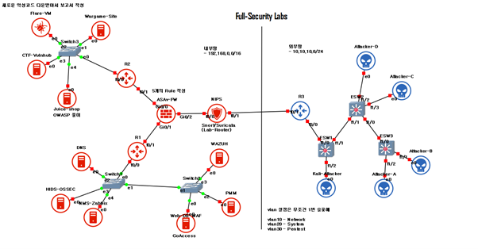
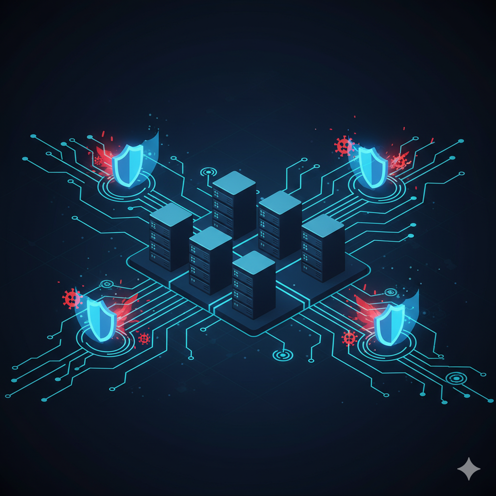

새 프로젝트 소개
이 페이지는 보안 코드 분석, CTF풀이과정, OWASP 풀이과정 등 에 대해 다룹니다. 다양한 도구와 기술을 활용하여 실제와 유사한 환경에서 보안 문제를 해결하는 과정을 확인하실 수 있습니다.
PROJECTS

GNS3 토폴로지 작성

서버구축 및 NIDS
보안 로그 분석
CTF 풀이 과정(Bluemoon)

OWASP Juice Shop